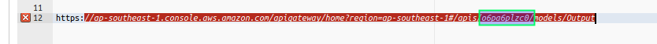

AWS LAMBDA
Disclaimer: This is base on Create an API Gateway API for AWS Lambda FunctionsSTEP 1: SETUP IAM
- Go to IAM
- Create New Role
- We need to select to go to next step - Select AWS Lambda Then Next
- add Role Name
- We now have an IAM ROLE
- Lets add the Required Policy for Lambda and API GATEWAY
- Click the Create Role
- Click Permissions tab
-
Expand Inline Policies and Create one
-
You Can Create Via Policy Generator
-
Set the following values:
Effect: "Allow"
AWS Service: "AWS Lambda"
Action: "Invoke Function"
ARN: "*" // or specify if you want to retrict to specific arn - Click Next Step
-
Set the following values:
-
Via Custom Policy
just paste this:
{ "Version": "2012-10-17", "Statement": [ { "Effect": "Allow", "Action": "lambda:InvokeFunction", "Resource": "*" } ] }
Validate then Apply Policy
-
You Can Create Via Policy Generator
-
Click Trust relationships tab for the API GATEWAY Permission
Edit and add apigateway.amazonaws.com in service{ "Version": "2012-10-17", "Statement": [ { "Effect": "Allow", "Principal": { "Service": [ "lambda.amazonaws.com", "apigateway.amazonaws.com" ] }, "Action": "sts:AssumeRole" } ] }
then update policy
Note: If you do not enact this policy, the API caller will receive a 500 Internal Server Error response. The response contains the "Invalid permissions on Lambda function" error message.
Step 2: Create Lambda Function
- Go to Lambda Console
- Select Blueprint: Choose Blank Function
- Add then function Name
- Choose Your Runtime e.g. Node.js
- And put your function.
exports.handler = function(event, context, callback) { console.log('Received event:', JSON.stringify(event, null, 2)); if (event.a === undefined || event.b === undefined || event.op === undefined) { callback("400 Invalid Input"); } var res = {}; res.a = Number(event.a); res.b = Number(event.b); res.op = event.op; if (isNaN(event.a) || isNaN(event.b)) { callback("400 Invalid Operand"); } switch(event.op) { case "+": case "add": res.c = res.a + res.b; break; case "-": case "sub": res.c = res.a - res.b; break; case "*": case "mul": res.c = res.a * res.b; break; case "/": case "div": res.c = res.b===0 ? NaN : Number(event.a) / Number(event.b); break; default: callback("400 Invalid Operator"); break; } callback(null, res); }; - Role: Choose an existing role
- Existing Role: Select the IAM Role we create on step1
- Click Next and Review the Function then Create function
- We successfuly create a Lambda Function !
- Let us now test it. Click the Button
- Then Set the parameters for the function
{ "a": "1", "b": "2", "op": "+" }
SAMPLE RESPONSE:
Create API Resources for the Lambda Function
- Create New API
- Select NEW API
- Add your API Name
-
Create the /calc resource off the API's root. We will expose the GET and POST methods on this resource for the client to invoke the backend Lambda function. The caller must supply the required input as query string parameters (to be declared as ?operand1=...&operand2=...&operator=...) in the GET request and as a JSON payload in the POST request, respectively. We will also create the /calc/{operand1}/{operand2}/{operator} resource subtree to expose the GET method to invoke the Lambda function. The caller must supply the required input by specifying the three path parameters (operand1, operand2, and operator).
- Click the /
- Click Actions -> Create Resource
- Fill the settings. provide Resource name and Resource Path
Create a GET Method with Query Parameters
- Choose the created Resources in previous instruction
- Click Actions -> Create Method then select GET
- Click the GET Method and set it up
-
Integration Type: AWS Service
AWS Region: Select your preferred region
AWS Service: Lambda
Subdomain: skip this one
HTTP Method: POST
Action Type: Use path override
Path override: SET to "/2015-03-31/functions/arn:aws:lambda:SelectedRegion:AccountNumber:function:lambdaFunctionName/invocations"
How to Get the accountNumber? On the upper right side of the console Click Your Name and you will be navigated to your account details. get the Account Id
Execution role: Paste the Role ARN we created at step 1.
Where is it? In the IAM Console, Click Roles and Select the created Role and copy Role ARN
Leave the Passthrough
SAVE ! - Click the GET -> Method Request on the /calc to received the query string parameters
- Set Request Validator: Validate query string parameters and headers Dont forget to save. Click the save icon
- Click the URL Query String Parameters and add your query parameters
- Go Back (Click Method Execution)
- Click Integration Request
- Expand Body Mapping Templates
- Set Request Body passthrough: When no template matches the request Content-Type header
- Click Add mapping template
- add application/json then click save icon
-
put your JSON configuration for template
{ "a": "$input.params('operand1')", "b": "$input.params('operand2')", "op": "$input.params('operator')" } - Save
Create a POST Method with a JSON Payload
- Create a POST Method under your resources
-
Integration Type: AWS Service
AWS Region: Select your preferred region
AWS Service: Lambda
Subdomain: skip this one
HTTP Method: POST
Action Type: Use path override
Path override: SET to "/2015-03-31/functions/arn:aws:lambda:SelectedRegion:AccountNumber:function:lambdaFunctionName/invocations"
How to Get the accountNumber? On the upper right side of the console Click Your Name and you will be navigated to your account details. get the Account Id
Execution role: Paste the Role ARN we created at step 1.
Where is it? In the IAM Console, Click Roles and Select the created Role and copy Role ARN
Leave the Passthrough
SAVE ! - Click Models and Create one
- Fill the Name, Content-Type and Model Schema (Model Schema base on you function parameters requirements)
the Calc Function Above Requirea,bandopas parameters
- Click the
- Create the Model for
Output
- Create the Model for the
Result
{ "type":"object", "properties":{ "input":{ "$ref":"https://apigateway.amazonaws.com/restapis/<restapi-id>/models/<ModelName>" }, "output":{ "$ref":"https://apigateway.amazonaws.com/restapis/<restapi-id>/models/<ModelName>" } }, "title":"Output" }
Oh shit! where can i get thet restapi-id !!
Drag any model in your resources to the Model Schema editor and booyaahh !
 - Go back to Resources and click the POST Method under the created resources
- Click the Method Request Configuration and update the Request Validator to Validate body(Dont forget to save)
- Expand the Rquest Body
- Click the Add Model
- Content type: application/json, Model Name: Input
- Now lets test it. Go Back and Click Test
-
add this as parameters
{ "a": 1, "b": 2, "op": "+" } -
Sample Response:
Create a GET Method with Path/Request Parameters
- Create Resource Under you main resource
/{operand1}serve as 1st parameter- create another resources under /{operand1}
/{operand2}2nd parameter - create another resourcees under /{operand2}
/{operator}serve as the 3rd parameter - And create the
GETMethod under the last resource e.g. /{operator} - Configure the
GETMethod -
Integration Type: lambda Function
Lambda Region: Your Region
Lambda Function: The Name of the Lambda fx - Click Save and (Yes) Add Permission to lambda function
- Now, Lets go back and add mapping template
- Click the Integration Request
- Leave the Integration Type: Lambda Function
- Expand the Body Mapping Templates
- Add mapping template
- add application/json Content type
-
{ "a": "$input.params('operand1')", "b": "$input.params('operand2')", "op": #if($input.params('operator')=='%2F')"/"#{else}"$input.params('operator')"#end }This template maps the three URL path parameters, declared when the /calc/{operand1}/{operand2}/{operator} resource was created, into designated property values of the JSON object. Because URL paths must be URL-encoded, the division operator must be specified as %2F instead of /. This template translates the %2F into '/ before passing it to the Lambda function.
- Screenshot
- Save it Then lets test it
- Sample-Response: